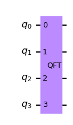
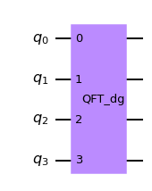
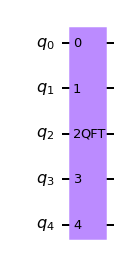
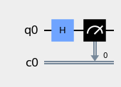

qiskit.circuit.library.QFT¶
-
class
QFT(num_qubits=None, approximation_degree=0, do_swaps=True, inverse=False, insert_barriers=False, name='QFT')[código fonte]¶ Quantum Fourier Transform Circuit.
The Quantum Fourier Transform (QFT) on \(n\) qubits is the operation
\[|j\rangle \mapsto \frac{1}{2^{n/2}} \sum_{k=0}^{2^n - 1} e^{2\pi ijk / 2^n} |k\rangle\]The circuit that implements this transformation can be implemented using Hadamard gates on each qubit, a series of controlled-U1 (or Z, depending on the phase) gates and a layer of Swap gates. The layer of Swap gates can in principle be dropped if the QFT appears at the end of the circuit, since then the re-ordering can be done classically. They can be turned off using the
do_swapsattribute.For 4 qubits, the circuit that implements this transformation is:
The inverse QFT can be obtained by calling the
inversemethod on this class. The respective circuit diagram is:One method to reduce circuit depth is to implement the QFT approximately by ignoring controlled-phase rotations where the angle is beneath a threshold. This is discussed in more detail in https://arxiv.org/abs/quant-ph/9601018 or https://arxiv.org/abs/quant-ph/0403071.
Here, this can be adjusted using the
approximation_degreeattribute: the smallestapproximation_degreerotation angles are dropped from the QFT. For instance, a QFT on 5 qubits with approximation degree 2 yields (the barriers are dropped in this example):Construct a new QFT circuit.
- Parâmetros
num_qubits (
Optional[int]) – The number of qubits on which the QFT acts.approximation_degree (
int) – The degree of approximation (0 for no approximation).do_swaps (
bool) – Whether to include the final swaps in the QFT.inverse (
bool) – If True, the inverse Fourier transform is constructed.insert_barriers (
bool) – If True, barriers are inserted as visualization improvement.name (
str) – The name of the circuit.
-
__init__(num_qubits=None, approximation_degree=0, do_swaps=True, inverse=False, insert_barriers=False, name='QFT')[código fonte]¶ Construct a new QFT circuit.
- Parâmetros
num_qubits (
Optional[int]) – The number of qubits on which the QFT acts.approximation_degree (
int) – The degree of approximation (0 for no approximation).do_swaps (
bool) – Whether to include the final swaps in the QFT.inverse (
bool) – If True, the inverse Fourier transform is constructed.insert_barriers (
bool) – If True, barriers are inserted as visualization improvement.name (
str) – The name of the circuit.
Methods
__init__([num_qubits, approximation_degree, …])Construct a new QFT circuit.
add_bits(bits)Add Bits to the circuit.
add_calibration(gate, qubits, schedule[, params])Register a low-level, custom pulse definition for the given gate.
add_register(*regs)Add registers.
append(instruction[, qargs, cargs])Append one or more instructions to the end of the circuit, modifying the circuit in place.
assign_parameters(parameters[, inplace, …])Assign parameters to new parameters or values.
barrier(*qargs)Apply
Barrier.bind_parameters(values[, value_dict])Assign numeric parameters to values yielding a new circuit.
cast(value, _type)Best effort to cast value to type.
cbit_argument_conversion(clbit_representation)Converts several classical bit representations (such as indexes, range, etc.) into a list of classical bits.
ccx(control_qubit1, control_qubit2, target_qubit)Apply
CCXGate.ch(control_qubit, target_qubit[, label, …])Apply
CHGate.Return the current number of instances of this class, useful for auto naming.
Return the prefix to use for auto naming.
cnot(control_qubit, target_qubit[, label, …])Apply
CXGate.combine(rhs)DEPRECATED - Returns rhs appended to self if self contains compatible registers.
compose(other[, qubits, clbits, front, …])Compose circuit with
othercircuit or instruction, optionally permuting wires.control([num_ctrl_qubits, label, ctrl_state])Control this circuit on
num_ctrl_qubitsqubits.copy([name])Copy the circuit.
Count each operation kind in the circuit.
cp(theta, control_qubit, target_qubit[, …])Apply
CPhaseGate.crx(theta, control_qubit, target_qubit[, …])Apply
CRXGate.cry(theta, control_qubit, target_qubit[, …])Apply
CRYGate.crz(theta, control_qubit, target_qubit[, …])Apply
CRZGate.cswap(control_qubit, target_qubit1, …[, …])Apply
CSwapGate.csx(control_qubit, target_qubit[, label, …])Apply
CSXGate.cu(theta, phi, lam, gamma, control_qubit, …)Apply
CUGate.cu1(theta, control_qubit, target_qubit[, …])Apply
CU1Gate.cu3(theta, phi, lam, control_qubit, target_qubit)Apply
CU3Gate.cx(control_qubit, target_qubit[, label, …])Apply
CXGate.cy(control_qubit, target_qubit[, label, …])Apply
CYGate.cz(control_qubit, target_qubit[, label, …])Apply
CZGate.dcx(qubit1, qubit2)Apply
DCXGate.Call a decomposition pass on this circuit, to decompose one level (shallow decompose).
delay(duration[, qarg, unit])Apply
Delay.depth()Return circuit depth (i.e., length of critical path).
diagonal(diag, qubit)Attach a diagonal gate to a circuit.
draw([output, scale, filename, style, …])Draw the quantum circuit.
ecr(qubit1, qubit2)Apply
ECRGate.extend(rhs)DEPRECATED - Append QuantumCircuit to the RHS if it contains compatible registers.
fredkin(control_qubit, target_qubit1, …)Apply
CSwapGate.from_qasm_file(path)Take in a QASM file and generate a QuantumCircuit object.
from_qasm_str(qasm_str)Take in a QASM string and generate a QuantumCircuit object.
get_instructions(name)Get instructions matching name.
h(qubit)Apply
HGate.hamiltonian(operator, time, qubits[, label])Apply hamiltonian evolution to qubits.
has_register(register)Test if this circuit has the register r.
i(qubit)Apply
IGate.id(qubit)Apply
IGate.initialize(params[, qubits])Initialize qubits in a specific state.
inverse()Invert this circuit.
Whether the inverse Fourier transform is implemented.
iso(isometry, q_input, q_ancillas_for_output)Attach an arbitrary isometry from m to n qubits to a circuit.
isometry(isometry, q_input, …[, …])Attach an arbitrary isometry from m to n qubits to a circuit.
iswap(qubit1, qubit2)Apply
iSwapGate.mcp(lam, control_qubits, target_qubit)Apply
MCPhaseGate.mcrx(theta, q_controls, q_target[, …])Apply Multiple-Controlled X rotation gate
mcry(theta, q_controls, q_target[, …])Apply Multiple-Controlled Y rotation gate
mcrz(lam, q_controls, q_target[, …])Apply Multiple-Controlled Z rotation gate
mct(control_qubits, target_qubit[, …])Apply
MCXGate.mcu1(lam, control_qubits, target_qubit)Apply
MCU1Gate.mcx(control_qubits, target_qubit[, …])Apply
MCXGate.measure(qubit, cbit)Measure quantum bit into classical bit (tuples).
measure_active([inplace])Adds measurement to all non-idle qubits.
measure_all([inplace])Adds measurement to all qubits.
ms(theta, qubits)Apply
MSGate.num_connected_components([unitary_only])How many non-entangled subcircuits can the circuit be factored to.
Return number of non-local gates (i.e.
Computes the number of tensor factors in the unitary (quantum) part of the circuit only.
Computes the number of tensor factors in the unitary (quantum) part of the circuit only.
p(theta, qubit)Apply
PhaseGate.pauli(pauli_string, qubits)Apply
PauliGate.power(power[, matrix_power])Raise this circuit to the power of
power.qasm([formatted, filename, encoding])Return OpenQASM string.
qbit_argument_conversion(qubit_representation)Converts several qubit representations (such as indexes, range, etc.) into a list of qubits.
qubit_duration(*qubits)Return the duration between the start and stop time of the first and last instructions, excluding delays, over the supplied qubits.
qubit_start_time(*qubits)Return the start time of the first instruction, excluding delays, over the supplied qubits.
qubit_stop_time(*qubits)Return the stop time of the last instruction, excluding delays, over the supplied qubits.
r(theta, phi, qubit)Apply
RGate.rcccx(control_qubit1, control_qubit2, …)Apply
RC3XGate.rccx(control_qubit1, control_qubit2, …)Apply
RCCXGate.remove_final_measurements([inplace])Removes final measurement on all qubits if they are present.
repeat(reps)Repeat this circuit
repstimes.reset(qubit)Reset q.
Return a circuit with the opposite order of wires.
Reverse the circuit by reversing the order of instructions.
rv(vx, vy, vz, qubit)Apply
RVGate.rx(theta, qubit[, label])Apply
RXGate.rxx(theta, qubit1, qubit2)Apply
RXXGate.ry(theta, qubit[, label])Apply
RYGate.ryy(theta, qubit1, qubit2)Apply
RYYGate.rz(phi, qubit)Apply
RZGate.rzx(theta, qubit1, qubit2)Apply
RZXGate.rzz(theta, qubit1, qubit2)Apply
RZZGate.s(qubit)Apply
SGate.save_amplitudes(params[, label, pershot, …])Save complex statevector amplitudes.
save_amplitudes_squared(params[, label, …])Save squared statevector amplitudes (probabilities).
save_density_matrix([qubits, label, …])Save the current simulator quantum state as a density matrix.
save_expectation_value(operator, qubits[, …])Save the expectation value of a Hermitian operator.
save_expectation_value_variance(operator, qubits)Save the expectation value of a Hermitian operator.
save_matrix_product_state([label, pershot, …])Save the current simulator quantum state as a matrix product state.
save_probabilities([qubits, label, …])Save measurement outcome probabilities vector.
save_probabilities_dict([qubits, label, …])Save measurement outcome probabilities vector.
save_stabilizer([label, pershot, conditional])Save the current stabilizer simulator quantum state as a Clifford.
save_state([label, pershot, conditional])Save the current simulator quantum state.
save_statevector([label, pershot, conditional])Save the current simulator quantum state as a statevector.
save_statevector_dict([label, pershot, …])Save the current simulator quantum state as a statevector as a dict.
save_superop([label, pershot])Save the current state of the superop simulator.
save_unitary([label, pershot])Save the current state of the unitary simulator.
sdg(qubit)Apply
SdgGate.set_density_matrix(state)Set the density matrix state of the simulator.
set_matrix_product_state(state)Set the matrix product state of the simulator.
set_stabilizer(state)Set the Clifford stabilizer state of the simulator.
set_statevector(state)Set the statevector state of the simulator.
set_superop(state)Set the superop state of the simulator.
set_unitary(state)Set the state state of the simulator.
size()Returns total number of gate operations in circuit.
snapshot(label[, snapshot_type, qubits, params])Take a statevector snapshot of the internal simulator representation.
snapshot_density_matrix(label[, qubits])Take a density matrix snapshot of simulator state.
snapshot_expectation_value(label, op, qubits)Take a snapshot of expectation value <O> of an Operator.
snapshot_probabilities(label, qubits[, variance])Take a probability snapshot of the simulator state.
snapshot_stabilizer(label)Take a stabilizer snapshot of the simulator state.
snapshot_statevector(label)Take a statevector snapshot of the simulator state.
squ(unitary_matrix, qubit[, mode, …])Decompose an arbitrary 2*2 unitary into three rotation gates.
swap(qubit1, qubit2)Apply
SwapGate.sx(qubit)Apply
SXGate.sxdg(qubit)Apply
SXdgGate.t(qubit)Apply
TGate.tdg(qubit)Apply
TdgGate.tensor(other[, inplace])Tensor
selfwithother.to_gate([parameter_map, label])Create a Gate out of this circuit.
to_instruction([parameter_map, label])Create an Instruction out of this circuit.
toffoli(control_qubit1, control_qubit2, …)Apply
CCXGate.u(theta, phi, lam, qubit)Apply
UGate.u1(theta, qubit)Apply
U1Gate.u2(phi, lam, qubit)Apply
U2Gate.u3(theta, phi, lam, qubit)Apply
U3Gate.uc(gate_list, q_controls, q_target[, …])Attach a uniformly controlled gates (also called multiplexed gates) to a circuit.
ucrx(angle_list, q_controls, q_target)Attach a uniformly controlled (also called multiplexed) Rx rotation gate to a circuit.
ucry(angle_list, q_controls, q_target)Attach a uniformly controlled (also called multiplexed) Ry rotation gate to a circuit.
ucrz(angle_list, q_controls, q_target)Attach a uniformly controlled (also called multiplexed gates) Rz rotation gate to a circuit.
unitary(obj, qubits[, label])Apply unitary gate to q.
width()Return number of qubits plus clbits in circuit.
x(qubit[, label])Apply
XGate.y(qubit)Apply
YGate.z(qubit)Apply
ZGate.Attributes
Returns a list of ancilla bits in the order that the registers were added.
The approximation degree of the QFT.
Return calibration dictionary.
Returns a list of classical bits in the order that the registers were added.
Return the circuit data (instructions and context).
Whether the final swaps of the QFT are applied or not.
extension_libReturn the global phase of the circuit in radians.
headerWhether barriers are inserted for better visualization or not.
instancesThe user provided metadata associated with the circuit
Return the number of ancilla qubits.
Return number of classical bits.
Convenience function to get the number of parameter objects in the circuit.
The number of qubits in the QFT circuit.
Convenience function to get the parameters defined in the parameter table.
prefixA list of the quantum registers associated with the circuit.
Returns a list of quantum bits in the order that the registers were added.
-
add_bits(bits)¶ Add Bits to the circuit.
-
add_calibration(gate, qubits, schedule, params=None)¶ Register a low-level, custom pulse definition for the given gate.
- Parâmetros
- Levanta
Exception – if the gate is of type string and params is None.
-
add_register(*regs)¶ Add registers.
-
property
ancillas¶ Returns a list of ancilla bits in the order that the registers were added.
-
append(instruction, qargs=None, cargs=None)¶ Append one or more instructions to the end of the circuit, modifying the circuit in place. Expands qargs and cargs.
- Parâmetros
instruction (qiskit.circuit.Instruction) – Instruction instance to append
qargs (list(argument)) – qubits to attach instruction to
cargs (list(argument)) – clbits to attach instruction to
- Retorna
a handle to the instruction that was just added
- Tipo de retorno
- Levanta
CircuitError – if object passed is a subclass of Instruction
CircuitError – if object passed is neither subclass nor an instance of Instruction
-
property
approximation_degree¶ The approximation degree of the QFT.
- Tipo de retorno
int- Retorna
The currently set approximation degree.
-
assign_parameters(parameters, inplace=False, param_dict=None)¶ Assign parameters to new parameters or values.
The keys of the parameter dictionary must be Parameter instances in the current circuit. The values of the dictionary can either be numeric values or new parameter objects. The values can be assigned to the current circuit object or to a copy of it.
- Parâmetros
parameters (dict or iterable) – Either a dictionary or iterable specifying the new parameter values. If a dict, it specifies the mapping from
current_parametertonew_parameter, wherenew_parametercan be a new parameter object or a numeric value. If an iterable, the elements are assigned to the existing parameters in the order they were inserted. You can callQuantumCircuit.parametersto check this order.inplace (bool) – If False, a copy of the circuit with the bound parameters is returned. If True the circuit instance itself is modified.
param_dict (dict) – Deprecated, use
parametersinstead.
- Levanta
CircuitError – If parameters is a dict and contains parameters not present in the circuit.
ValueError – If parameters is a list/array and the length mismatches the number of free parameters in the circuit.
- Retorna
A copy of the circuit with bound parameters, if
inplaceis False, otherwise None.- Tipo de retorno
Optional(QuantumCircuit)
Exemplos
Create a parameterized circuit and assign the parameters in-place.
from qiskit.circuit import QuantumCircuit, Parameter circuit = QuantumCircuit(2) params = [Parameter('A'), Parameter('B'), Parameter('C')] circuit.ry(params[0], 0) circuit.crx(params[1], 0, 1) print('Original circuit:') print(circuit.draw()) circuit.assign_parameters({params[0]: params[2]}, inplace=True) print('Assigned in-place:') print(circuit.draw())
Original circuit:
┌───────┐ q_0: ┤ Ry(A) ├────■──── └───────┘┌───┴───┐ q_1: ─────────┤ Rx(B) ├ └───────┘ Assigned in-place: ┌───────┐ q_0: ┤ Ry(C) ├────■──── └───────┘┌───┴───┐ q_1: ─────────┤ Rx(B) ├ └───────┘Bind the values out-of-place and get a copy of the original circuit.
from qiskit.circuit import QuantumCircuit, ParameterVector circuit = QuantumCircuit(2) params = ParameterVector('P', 2) circuit.ry(params[0], 0) circuit.crx(params[1], 0, 1) bound_circuit = circuit.assign_parameters({params[0]: 1, params[1]: 2}) print('Bound circuit:') print(bound_circuit.draw()) print('The original circuit is unchanged:') print(circuit.draw())
Bound circuit: ┌───────┐ q_0: ┤ Ry(1) ├────■──── └───────┘┌───┴───┐ q_1: ─────────┤ Rx(2) ├ └───────┘ The original circuit is unchanged: ┌──────────┐ q_0: ┤ Ry(P[0]) ├─────■────── └──────────┘┌────┴─────┐ q_1: ────────────┤ Rx(P[1]) ├ └──────────┘
-
barrier(*qargs)¶ Apply
Barrier. If qargs is None, applies to all.
-
bind_parameters(values, value_dict=None)¶ Assign numeric parameters to values yielding a new circuit.
To assign new Parameter objects or bind the values in-place, without yielding a new circuit, use the
assign_parameters()method.- Parâmetros
values (dict or iterable) – {parameter: value, …} or [value1, value2, …]
value_dict (dict) – Deprecated, use
valuesinstead.
- Levanta
CircuitError – If values is a dict and contains parameters not present in the circuit.
TypeError – If values contains a ParameterExpression.
- Retorna
copy of self with assignment substitution.
- Tipo de retorno
-
property
calibrations¶ Return calibration dictionary.
- The custom pulse definition of a given gate is of the form
{‘gate_name’: {(qubits, params): schedule}}
-
static
cast(value, _type)¶ Best effort to cast value to type. Otherwise, returns the value.
-
cbit_argument_conversion(clbit_representation)¶ Converts several classical bit representations (such as indexes, range, etc.) into a list of classical bits.
- Parâmetros
clbit_representation (Object) – representation to expand
- Retorna
Where each tuple is a classical bit.
- Tipo de retorno
List(tuple)
-
property
clbits¶ Returns a list of classical bits in the order that the registers were added.
-
classmethod
cls_instances()¶ Return the current number of instances of this class, useful for auto naming.
-
classmethod
cls_prefix()¶ Return the prefix to use for auto naming.
-
combine(rhs)¶ DEPRECATED - Returns rhs appended to self if self contains compatible registers.
Two circuits are compatible if they contain the same registers or if they contain different registers with unique names. The returned circuit will contain all unique registers between both circuits.
Return self + rhs as a new object.
- Parâmetros
rhs (QuantumCircuit) – The quantum circuit to append to the right hand side.
- Retorna
Returns a new QuantumCircuit object
- Tipo de retorno
- Levanta
QiskitError – if the rhs circuit is not compatible
-
compose(other, qubits=None, clbits=None, front=False, inplace=False, wrap=False)¶ Compose circuit with
othercircuit or instruction, optionally permuting wires.othercan be narrower or of equal width toself.- Parâmetros
other (qiskit.circuit.Instruction or QuantumCircuit or BaseOperator) – (sub)circuit to compose onto self.
qubits (list[Qubit|int]) – qubits of self to compose onto.
clbits (list[Clbit|int]) – clbits of self to compose onto.
front (bool) – If True, front composition will be performed (not implemented yet).
inplace (bool) – If True, modify the object. Otherwise return composed circuit.
wrap (bool) – If True, wraps the other circuit into a gate (or instruction, depending on whether it contains only unitary instructions) before composing it onto self.
- Retorna
the composed circuit (returns None if inplace==True).
- Tipo de retorno
- Levanta
CircuitError – if composing on the front.
QiskitError – if
otheris wider or there are duplicate edge mappings.
Examples:
lhs.compose(rhs, qubits=[3, 2], inplace=True) .. parsed-literal:: ┌───┐ ┌─────┐ ┌───┐ lqr_1_0: ───┤ H ├─── rqr_0: ──■──┤ Tdg ├ lqr_1_0: ───┤ H ├─────────────── ├───┤ ┌─┴─┐└─────┘ ├───┤ lqr_1_1: ───┤ X ├─── rqr_1: ┤ X ├─────── lqr_1_1: ───┤ X ├─────────────── ┌──┴───┴──┐ └───┘ ┌──┴───┴──┐┌───┐ lqr_1_2: ┤ U1(0.1) ├ + = lqr_1_2: ┤ U1(0.1) ├┤ X ├─────── └─────────┘ └─────────┘└─┬─┘┌─────┐ lqr_2_0: ─────■───── lqr_2_0: ─────■───────■──┤ Tdg ├ ┌─┴─┐ ┌─┴─┐ └─────┘ lqr_2_1: ───┤ X ├─── lqr_2_1: ───┤ X ├─────────────── └───┘ └───┘ lcr_0: 0 ═══════════ lcr_0: 0 ═══════════════════════ lcr_1: 0 ═══════════ lcr_1: 0 ═══════════════════════
-
control(num_ctrl_qubits=1, label=None, ctrl_state=None)¶ Control this circuit on
num_ctrl_qubitsqubits.- Parâmetros
num_ctrl_qubits (int) – The number of control qubits.
label (str) – An optional label to give the controlled operation for visualization.
ctrl_state (str or int) – The control state in decimal or as a bitstring (e.g. ‘111’). If None, use
2**num_ctrl_qubits - 1.
- Retorna
The controlled version of this circuit.
- Tipo de retorno
- Levanta
CircuitError – If the circuit contains a non-unitary operation and cannot be controlled.
-
copy(name=None)¶ Copy the circuit.
- Parâmetros
name (str) – name to be given to the copied circuit. If None, then the name stays the same
- Retorna
a deepcopy of the current circuit, with the specified name
- Tipo de retorno
-
count_ops()¶ Count each operation kind in the circuit.
- Retorna
a breakdown of how many operations of each kind, sorted by amount.
- Tipo de retorno
OrderedDict
-
cp(theta, control_qubit, target_qubit, label=None, ctrl_state=None)¶ Apply
CPhaseGate.
-
property
data¶ Return the circuit data (instructions and context).
- Retorna
a list-like object containing the tuples for the circuit’s data.
Each tuple is in the format
(instruction, qargs, cargs), where instruction is an Instruction (or subclass) object, qargs is a list of Qubit objects, and cargs is a list of Clbit objects.- Tipo de retorno
QuantumCircuitData
-
decompose()¶ Call a decomposition pass on this circuit, to decompose one level (shallow decompose).
- Retorna
a circuit one level decomposed
- Tipo de retorno
-
delay(duration, qarg=None, unit='dt')¶ Apply
Delay. If qarg is None, applies to all qubits. When applying to multiple qubits, delays with the same duration will be created.- Parâmetros
duration (int or float or ParameterExpression) – duration of the delay.
qarg (Object) – qubit argument to apply this delay.
unit (str) – unit of the duration. Supported units: ‘s’, ‘ms’, ‘us’, ‘ns’, ‘ps’, ‘dt’. Default is
dt, i.e. integer time unit depending on the target backend.
- Retorna
the attached delay instruction.
- Tipo de retorno
qiskit.Instruction
- Levanta
CircuitError – if arguments have bad format.
-
depth()¶ Return circuit depth (i.e., length of critical path). This does not include compiler or simulator directives such as ‘barrier’ or ‘snapshot’.
- Retorna
Depth of circuit.
- Tipo de retorno
int
Notas
The circuit depth and the DAG depth need not be the same.
-
diagonal(diag, qubit)¶ Attach a diagonal gate to a circuit.
The decomposition is based on Theorem 7 given in “Synthesis of Quantum Logic Circuits” by Shende et al. (https://arxiv.org/pdf/quant-ph/0406176.pdf).
- Parâmetros
diag (list) – list of the 2^k diagonal entries (for a diagonal gate on k qubits). Must contain at least two entries
qubit (QuantumRegister|list) – list of k qubits the diagonal is acting on (the order of the qubits specifies the computational basis in which the diagonal gate is provided: the first element in diag acts on the state where all the qubits in q are in the state 0, the second entry acts on the state where all the qubits q[1],…,q[k-1] are in the state zero and q[0] is in the state 1, and so on)
- Retorna
the diagonal gate which was attached to the circuit.
- Tipo de retorno
- Levanta
QiskitError – if the list of the diagonal entries or the qubit list is in bad format; if the number of diagonal entries is not 2^k, where k denotes the number of qubits
-
property
do_swaps¶ Whether the final swaps of the QFT are applied or not.
- Tipo de retorno
bool- Retorna
True, if the final swaps are applied, False if not.
-
draw(output=None, scale=None, filename=None, style=None, interactive=False, plot_barriers=True, reverse_bits=False, justify=None, vertical_compression='medium', idle_wires=True, with_layout=True, fold=None, ax=None, initial_state=False, cregbundle=True)¶ Draw the quantum circuit. Use the output parameter to choose the drawing format:
text: ASCII art TextDrawing that can be printed in the console.
matplotlib: images with color rendered purely in Python.
latex: high-quality images compiled via latex.
latex_source: raw uncompiled latex output.
- Parâmetros
output (str) – select the output method to use for drawing the circuit. Valid choices are
text,mpl,latex,latex_source. By default the text drawer is used unless the user config file (usually~/.qiskit/settings.conf) has an alternative backend set as the default. For example,circuit_drawer = latex. If the output kwarg is set, that backend will always be used over the default in the user config file.scale (float) – scale of image to draw (shrink if < 1.0). Only used by the mpl, latex and latex_source outputs. Defaults to 1.0.
filename (str) – file path to save image to. Defaults to None.
style (dict or str) – dictionary of style or file name of style json file. This option is only used by the mpl or latex output type. If style is a str, it is used as the path to a json file which contains a style dict. The file will be opened, parsed, and then any style elements in the dict will replace the default values in the input dict. A file to be loaded must end in
.json, but the name entered here can omit.json. For example,style='iqx.json'orstyle='iqx'. If style is a dict and the'name'key is set, that name will be used to load a json file, followed by loading the other items in the style dict. For example,style={'name': 'iqx'}. If style is not a str and name is not a key in the style dict, then the default value from the user config file (usually~/.qiskit/settings.conf) will be used, for example,circuit_mpl_style = iqx. If none of these are set, the default style will be used. The search path for style json files can be specified in the user config, for example,circuit_mpl_style_path = /home/user/styles:/home/user. See:DefaultStylefor more information on the contents.interactive (bool) – when set to true, show the circuit in a new window (for mpl this depends on the matplotlib backend being used supporting this). Note when used with either the text or the latex_source output type this has no effect and will be silently ignored. Defaults to False.
reverse_bits (bool) – when set to True, reverse the bit order inside registers for the output visualization. Defaults to False.
plot_barriers (bool) – enable/disable drawing barriers in the output circuit. Defaults to True.
justify (string) – options are
left,rightornone. If anything else is supplied, it defaults to left justified. It refers to where gates should be placed in the output circuit if there is an option.noneresults in each gate being placed in its own column.vertical_compression (string) –
high,mediumorlow. It merges the lines generated by the text output so the drawing will take less vertical room. Default ismedium. Only used by the text output, will be silently ignored otherwise.idle_wires (bool) – include idle wires (wires with no circuit elements) in output visualization. Default is True.
with_layout (bool) – include layout information, with labels on the physical layout. Default is True.
fold (int) – sets pagination. It can be disabled using -1. In text, sets the length of the lines. This is useful when the drawing does not fit in the console. If None (default), it will try to guess the console width using
shutil.get_terminal_size(). However, if running in jupyter, the default line length is set to 80 characters. In mpl, it is the number of (visual) layers before folding. Default is 25.ax (matplotlib.axes.Axes) – Only used by the mpl backend. An optional Axes object to be used for the visualization output. If none is specified, a new matplotlib Figure will be created and used. Additionally, if specified there will be no returned Figure since it is redundant.
initial_state (bool) – optional. Adds
|0>in the beginning of the wire. Default is False.cregbundle (bool) – optional. If set True, bundle classical registers. Default is True.
- Retorna
TextDrawingormatplotlib.figureorPIL.Imageorstr:- TextDrawing (output=’text’)
A drawing that can be printed as ascii art.
- matplotlib.figure.Figure (output=’mpl’)
A matplotlib figure object for the circuit diagram.
- PIL.Image (output=’latex’)
An in-memory representation of the image of the circuit diagram.
- str (output=’latex_source’)
The LaTeX source code for visualizing the circuit diagram.
- Levanta
VisualizationError – when an invalid output method is selected
ImportError – when the output methods requires non-installed libraries.
Exemplo
from qiskit import QuantumRegister, ClassicalRegister, QuantumCircuit from qiskit.tools.visualization import circuit_drawer q = QuantumRegister(1) c = ClassicalRegister(1) qc = QuantumCircuit(q, c) qc.h(q) qc.measure(q, c) qc.draw(output='mpl', style={'backgroundcolor': '#EEEEEE'})

-
extend(rhs)¶ DEPRECATED - Append QuantumCircuit to the RHS if it contains compatible registers.
Two circuits are compatible if they contain the same registers or if they contain different registers with unique names. The returned circuit will contain all unique registers between both circuits.
Modify and return self.
- Parâmetros
rhs (QuantumCircuit) – The quantum circuit to append to the right hand side.
- Retorna
Returns this QuantumCircuit object (which has been modified)
- Tipo de retorno
- Levanta
QiskitError – if the rhs circuit is not compatible
-
static
from_qasm_file(path)¶ Take in a QASM file and generate a QuantumCircuit object.
- Parâmetros
path (str) – Path to the file for a QASM program
- Retorna
The QuantumCircuit object for the input QASM
- Tipo de retorno
-
static
from_qasm_str(qasm_str)¶ Take in a QASM string and generate a QuantumCircuit object.
- Parâmetros
qasm_str (str) – A QASM program string
- Retorna
The QuantumCircuit object for the input QASM
- Tipo de retorno
-
get_instructions(name)¶ Get instructions matching name.
- Parâmetros
name (str) – The name of instruction to.
- Retorna
list of (instruction, qargs, cargs).
- Tipo de retorno
list(tuple)
-
property
global_phase¶ Return the global phase of the circuit in radians.
-
hamiltonian(operator, time, qubits, label=None)¶ Apply hamiltonian evolution to qubits.
-
has_register(register)¶ Test if this circuit has the register r.
- Parâmetros
register (Register) – a quantum or classical register.
- Retorna
True if the register is contained in this circuit.
- Tipo de retorno
bool
-
initialize(params, qubits=None)¶ Initialize qubits in a specific state.
Qubit initialization is done by first resetting the qubits to \(|0\rangle\) followed by an state preparing unitary. Both these steps are included in the Initialize instruction.
- Parâmetros
params (str or list or int) –
- str: labels of basis states of the Pauli eigenstates Z, X, Y. See
from_label(). Notice the order of the labels is reversed with respect to the qubit index to be applied to. Example label ‘01’ initializes the qubit zero to |1> and the qubit one to |0>.
list: vector of complex amplitudes to initialize to.
- int: an integer that is used as a bitmap indicating which qubits to initialize
to |1>. Example: setting params to 5 would initialize qubit 0 and qubit 2 to |1> and qubit 1 to |0>.
qubits (QuantumRegister or int) –
QuantumRegister: A list of qubits to be initialized [Default: None].
int: Index of qubit to initialized [Default: None].
- Retorna
a handle to the instruction that was just initialized
- Tipo de retorno
Exemplos
Prepare a qubit in the state \((|0\rangle - |1\rangle) / \sqrt{2}\).
import numpy as np from qiskit import QuantumCircuit circuit = QuantumCircuit(1) circuit.initialize([1/np.sqrt(2), -1/np.sqrt(2)], 0) circuit.draw()
┌──────────────────────────────┐ q_0: ┤ Initialize(0.70711,-0.70711) ├ └──────────────────────────────┘- output:
┌──────────────────────────────┐
- q_0: ┤ initialize(0.70711,-0.70711) ├
└──────────────────────────────┘
Initialize from a string two qubits in the state |10>. The order of the labels is reversed with respect to qubit index. More information about labels for basis states are in
from_label().import numpy as np from qiskit import QuantumCircuit circuit = QuantumCircuit(2) circuit.initialize('01', circuit.qubits) circuit.draw()
┌──────────────────┐ q_0: ┤0 ├ │ Initialize(0,1) │ q_1: ┤1 ├ └──────────────────┘- output:
┌──────────────────┐
- q_0: ┤0 ├
│ initialize(0,1) │
- q_1: ┤1 ├
└──────────────────┘
Initialize two qubits from an array of complex amplitudes .. jupyter-execute:
import numpy as np from qiskit import QuantumCircuit circuit = QuantumCircuit(2) circuit.initialize([0, 1/np.sqrt(2), -1.j/np.sqrt(2), 0], circuit.qubits) circuit.draw()
- output:
┌────────────────────────────────────┐
- q_0: ┤0 ├
│ initialize(0,0.70711,-0.70711j,0) │
- q_1: ┤1 ├
└────────────────────────────────────┘
-
property
insert_barriers¶ Whether barriers are inserted for better visualization or not.
- Tipo de retorno
bool- Retorna
True, if barriers are inserted, False if not.
-
inverse()[código fonte]¶ Invert this circuit.
- Tipo de retorno
QFT- Retorna
The inverted circuit.
-
is_inverse()[código fonte]¶ Whether the inverse Fourier transform is implemented.
- Tipo de retorno
bool- Retorna
True, if the inverse Fourier transform is implemented, False otherwise.
-
iso(isometry, q_input, q_ancillas_for_output, q_ancillas_zero=None, q_ancillas_dirty=None, epsilon=1e-10)¶ Attach an arbitrary isometry from m to n qubits to a circuit. In particular, this allows to attach arbitrary unitaries on n qubits (m=n) or to prepare any state on n qubits (m=0). The decomposition used here was introduced by Iten et al. in https://arxiv.org/abs/1501.06911.
- Parâmetros
isometry (ndarray) – an isometry from m to n qubits, i.e., a (complex) ndarray of dimension 2^n×2^m with orthonormal columns (given in the computational basis specified by the order of the ancillas and the input qubits, where the ancillas are considered to be more significant than the input qubits.).
q_input (QuantumRegister|list[Qubit]) – list of m qubits where the input to the isometry is fed in (empty list for state preparation).
q_ancillas_for_output (QuantumRegister|list[Qubit]) – list of n-m ancilla qubits that are used for the output of the isometry and which are assumed to start in the zero state. The qubits are listed with increasing significance.
q_ancillas_zero (QuantumRegister|list[Qubit]) – list of ancilla qubits which are assumed to start in the zero state. Default is q_ancillas_zero = None.
q_ancillas_dirty (QuantumRegister|list[Qubit]) – list of ancilla qubits which can start in an arbitrary state. Default is q_ancillas_dirty = None.
epsilon (float) – error tolerance of calculations. Default is epsilon = _EPS.
- Retorna
the isometry is attached to the quantum circuit.
- Tipo de retorno
- Levanta
QiskitError – if the array is not an isometry of the correct size corresponding to the provided number of qubits.
-
isometry(isometry, q_input, q_ancillas_for_output, q_ancillas_zero=None, q_ancillas_dirty=None, epsilon=1e-10)¶ Attach an arbitrary isometry from m to n qubits to a circuit. In particular, this allows to attach arbitrary unitaries on n qubits (m=n) or to prepare any state on n qubits (m=0). The decomposition used here was introduced by Iten et al. in https://arxiv.org/abs/1501.06911.
- Parâmetros
isometry (ndarray) – an isometry from m to n qubits, i.e., a (complex) ndarray of dimension 2^n×2^m with orthonormal columns (given in the computational basis specified by the order of the ancillas and the input qubits, where the ancillas are considered to be more significant than the input qubits.).
q_input (QuantumRegister|list[Qubit]) – list of m qubits where the input to the isometry is fed in (empty list for state preparation).
q_ancillas_for_output (QuantumRegister|list[Qubit]) – list of n-m ancilla qubits that are used for the output of the isometry and which are assumed to start in the zero state. The qubits are listed with increasing significance.
q_ancillas_zero (QuantumRegister|list[Qubit]) – list of ancilla qubits which are assumed to start in the zero state. Default is q_ancillas_zero = None.
q_ancillas_dirty (QuantumRegister|list[Qubit]) – list of ancilla qubits which can start in an arbitrary state. Default is q_ancillas_dirty = None.
epsilon (float) – error tolerance of calculations. Default is epsilon = _EPS.
- Retorna
the isometry is attached to the quantum circuit.
- Tipo de retorno
- Levanta
QiskitError – if the array is not an isometry of the correct size corresponding to the provided number of qubits.
-
mcp(lam, control_qubits, target_qubit)¶ Apply
MCPhaseGate.
-
mcrx(theta, q_controls, q_target, use_basis_gates=False)¶ Apply Multiple-Controlled X rotation gate
- Parâmetros
self (QuantumCircuit) – The QuantumCircuit object to apply the mcrx gate on.
theta (float) – angle theta
q_controls (list(Qubit)) – The list of control qubits
q_target (Qubit) – The target qubit
use_basis_gates (bool) – use p, u, cx
- Levanta
QiskitError – parameter errors
-
mcry(theta, q_controls, q_target, q_ancillae=None, mode=None, use_basis_gates=False)¶ Apply Multiple-Controlled Y rotation gate
- Parâmetros
self (QuantumCircuit) – The QuantumCircuit object to apply the mcry gate on.
theta (float) – angle theta
q_controls (list(Qubit)) – The list of control qubits
q_target (Qubit) – The target qubit
q_ancillae (QuantumRegister or tuple(QuantumRegister, int)) – The list of ancillary qubits.
mode (string) – The implementation mode to use
use_basis_gates (bool) – use p, u, cx
- Levanta
QiskitError – parameter errors
-
mcrz(lam, q_controls, q_target, use_basis_gates=False)¶ Apply Multiple-Controlled Z rotation gate
- Parâmetros
self (QuantumCircuit) – The QuantumCircuit object to apply the mcrz gate on.
lam (float) – angle lambda
q_controls (list(Qubit)) – The list of control qubits
q_target (Qubit) – The target qubit
use_basis_gates (bool) – use p, u, cx
- Levanta
QiskitError – parameter errors
-
mcu1(lam, control_qubits, target_qubit)¶ Apply
MCU1Gate.
-
mcx(control_qubits, target_qubit, ancilla_qubits=None, mode='noancilla')¶ Apply
MCXGate.The multi-cX gate can be implemented using different techniques, which use different numbers of ancilla qubits and have varying circuit depth. These modes are: - ‘noancilla’: Requires 0 ancilla qubits. - ‘recursion’: Requires 1 ancilla qubit if more than 4 controls are used, otherwise 0. - ‘v-chain’: Requires 2 less ancillas than the number of control qubits. - ‘v-chain-dirty’: Same as for the clean ancillas (but the circuit will be longer).
-
measure(qubit, cbit)¶ Measure quantum bit into classical bit (tuples).
- Parâmetros
qubit (QuantumRegister|list|tuple) – quantum register
cbit (ClassicalRegister|list|tuple) – classical register
- Retorna
the attached measure instruction.
- Tipo de retorno
qiskit.Instruction
- Levanta
CircuitError – if qubit is not in this circuit or bad format; if cbit is not in this circuit or not creg.
-
measure_active(inplace=True)¶ Adds measurement to all non-idle qubits. Creates a new ClassicalRegister with a size equal to the number of non-idle qubits being measured.
Returns a new circuit with measurements if inplace=False.
- Parâmetros
inplace (bool) – All measurements inplace or return new circuit.
- Retorna
Returns circuit with measurements when inplace = False.
- Tipo de retorno
-
measure_all(inplace=True)¶ Adds measurement to all qubits. Creates a new ClassicalRegister with a size equal to the number of qubits being measured.
Returns a new circuit with measurements if inplace=False.
- Parâmetros
inplace (bool) – All measurements inplace or return new circuit.
- Retorna
Returns circuit with measurements when inplace = False.
- Tipo de retorno
-
property
metadata¶ The user provided metadata associated with the circuit
The metadata for the circuit is a user provided
dictof metadata for the circuit. It will not be used to influence the execution or operation of the circuit, but it is expected to be passed between all transforms of the circuit (ie transpilation) and that providers will associate any circuit metadata with the results it returns from execution of that circuit.
-
property
num_ancillas¶ Return the number of ancilla qubits.
-
property
num_clbits¶ Return number of classical bits.
-
num_connected_components(unitary_only=False)¶ How many non-entangled subcircuits can the circuit be factored to.
- Parâmetros
unitary_only (bool) – Compute only unitary part of graph.
- Retorna
Number of connected components in circuit.
- Tipo de retorno
int
-
num_nonlocal_gates()¶ Return number of non-local gates (i.e. involving 2+ qubits).
Conditional nonlocal gates are also included.
-
property
num_parameters¶ Convenience function to get the number of parameter objects in the circuit.
- Tipo de retorno
int
-
property
num_qubits¶ The number of qubits in the QFT circuit.
- Tipo de retorno
int- Retorna
The number of qubits in the circuit.
Nota
This method needs to be overwritten to allow adding the setter for num_qubits while still complying to pylint.
-
num_tensor_factors()¶ Computes the number of tensor factors in the unitary (quantum) part of the circuit only.
Notas
This is here for backwards compatibility, and will be removed in a future release of Qiskit. You should call num_unitary_factors instead.
-
num_unitary_factors()¶ Computes the number of tensor factors in the unitary (quantum) part of the circuit only.
-
property
parameters¶ Convenience function to get the parameters defined in the parameter table.
- Tipo de retorno
ParameterView
-
power(power, matrix_power=False)¶ Raise this circuit to the power of
power.If
poweris a positive integer andmatrix_powerisFalse, this implementation defaults to callingrepeat. Otherwise, if the circuit is unitary, the matrix is computed to calculate the matrix power.- Parâmetros
power (int) – The power to raise this circuit to.
matrix_power (bool) – If True, the circuit is converted to a matrix and then the matrix power is computed. If False, and
poweris a positive integer, the implementation defaults torepeat.
- Levanta
CircuitError – If the circuit needs to be converted to a gate but it is not unitary.
- Retorna
A circuit implementing this circuit raised to the power of
power.- Tipo de retorno
-
qasm(formatted=False, filename=None, encoding=None)¶ Return OpenQASM string.
- Parâmetros
formatted (bool) – Return formatted Qasm string.
filename (str) – Save Qasm to file with name ‘filename’.
encoding (str) – Optionally specify the encoding to use for the output file if
filenameis specified. By default this is set to the system’s default encoding (ie whateverlocale.getpreferredencoding()returns) and can be set to any valid codec or alias from stdlib’s codec module
- Retorna
If formatted=False.
- Tipo de retorno
str
- Levanta
MissingOptionalLibraryError – If pygments is not installed and
formattedisTrue.QasmError – If circuit has free parameters.
-
qbit_argument_conversion(qubit_representation)¶ Converts several qubit representations (such as indexes, range, etc.) into a list of qubits.
- Parâmetros
qubit_representation (Object) – representation to expand
- Retorna
Where each tuple is a qubit.
- Tipo de retorno
List(tuple)
-
property
qregs¶ A list of the quantum registers associated with the circuit.
-
qubit_duration(*qubits)¶ Return the duration between the start and stop time of the first and last instructions, excluding delays, over the supplied qubits. Its time unit is
self.unit.- Parâmetros
*qubits – Qubits within
selfto include.- Tipo de retorno
float- Retorna
Return the duration between the first start and last stop time of non-delay instructions
-
qubit_start_time(*qubits)¶ Return the start time of the first instruction, excluding delays, over the supplied qubits. Its time unit is
self.unit.Return 0 if there are no instructions over qubits
- Parâmetros
*qubits – Qubits within
selfto include. Integers are allowed for qubits, indicatingof self.qubits. (indices) –
- Tipo de retorno
float- Retorna
Return the start time of the first instruction, excluding delays, over the qubits
- Levanta
CircuitError – if
selfis a not-yet scheduled circuit.
-
qubit_stop_time(*qubits)¶ Return the stop time of the last instruction, excluding delays, over the supplied qubits. Its time unit is
self.unit.Return 0 if there are no instructions over qubits
- Parâmetros
*qubits – Qubits within
selfto include. Integers are allowed for qubits, indicatingof self.qubits. (indices) –
- Tipo de retorno
float- Retorna
Return the stop time of the last instruction, excluding delays, over the qubits
- Levanta
CircuitError – if
selfis a not-yet scheduled circuit.
-
property
qubits¶ Returns a list of quantum bits in the order that the registers were added.
-
remove_final_measurements(inplace=True)¶ Removes final measurement on all qubits if they are present. Deletes the ClassicalRegister that was used to store the values from these measurements if it is idle.
Returns a new circuit without measurements if inplace=False.
- Parâmetros
inplace (bool) – All measurements removed inplace or return new circuit.
- Retorna
Returns circuit with measurements removed when inplace = False.
- Tipo de retorno
-
repeat(reps)¶ Repeat this circuit
repstimes.- Parâmetros
reps (int) – How often this circuit should be repeated.
- Retorna
A circuit containing
repsrepetitions of this circuit.- Tipo de retorno
-
reset(qubit)¶ Reset q.
-
reverse_bits()¶ Return a circuit with the opposite order of wires.
The circuit is “vertically” flipped. If a circuit is defined over multiple registers, the resulting circuit will have the same registers but with their order flipped.
This method is useful for converting a circuit written in little-endian convention to the big-endian equivalent, and vice versa.
- Retorna
the circuit with reversed bit order.
- Tipo de retorno
Exemplos
- input:
┌───┐
- q_0: ┤ H ├─────■──────
└───┘┌────┴─────┐
- q_1: ─────┤ RX(1.57) ├
└──────────┘
- output:
┌──────────┐
- q_0: ─────┤ RX(1.57) ├
┌───┐└────┬─────┘
- q_1: ┤ H ├─────■──────
└───┘
-
reverse_ops()¶ Reverse the circuit by reversing the order of instructions.
This is done by recursively reversing all instructions. It does not invert (adjoint) any gate.
- Retorna
the reversed circuit.
- Tipo de retorno
Exemplos
- input:
┌───┐
- q_0: ┤ H ├─────■──────
└───┘┌────┴─────┐
- q_1: ─────┤ RX(1.57) ├
└──────────┘
- output:
┌───┐
- q_0: ─────■──────┤ H ├
┌────┴─────┐└───┘
- q_1: ┤ RX(1.57) ├─────
└──────────┘
-
save_amplitudes(params, label='amplitudes', pershot=False, conditional=False)¶ Save complex statevector amplitudes.
- Parâmetros
params (List[int] or List[str]) – the basis states to return amplitudes for.
label (str) – the key for retrieving saved data from results.
pershot (bool) – if True save a list of amplitudes vectors for each shot of the simulation rather than the a single amplitude vector [Default: False].
conditional (bool) – if True save the amplitudes vector conditional on the current classical register values [Default: False].
- Retorna
with attached instruction.
- Tipo de retorno
- Levanta
ExtensionError – if params is invalid for the specified number of qubits.
-
save_amplitudes_squared(params, label='amplitudes_squared', unnormalized=False, pershot=False, conditional=False)¶ Save squared statevector amplitudes (probabilities).
- Parâmetros
params (List[int] or List[str]) – the basis states to return amplitudes for.
label (str) – the key for retrieving saved data from results.
unnormalized (bool) – If True return save the unnormalized accumulated probabilities over all shots [Default: False].
pershot (bool) – if True save a list of probability vectors for each shot of the simulation rather than the a single amplitude vector [Default: False].
conditional (bool) – if True save the probability vector conditional on the current classical register values [Default: False].
- Retorna
with attached instruction.
- Tipo de retorno
- Levanta
ExtensionError – if params is invalid for the specified number of qubits.
-
save_density_matrix(qubits=None, label='density_matrix', unnormalized=False, pershot=False, conditional=False)¶ Save the current simulator quantum state as a density matrix.
- Parâmetros
qubits (list or None) – the qubits to save reduced density matrix on. If None the full density matrix of qubits will be saved [Default: None].
label (str) – the key for retrieving saved data from results.
unnormalized (bool) – If True return save the unnormalized accumulated or conditional accumulated density matrix over all shots [Default: False].
pershot (bool) – if True save a list of density matrices for each shot of the simulation rather than the average over all shots [Default: False].
conditional (bool) – if True save the average or pershot data conditional on the current classical register values [Default: False].
- Retorna
with attached instruction.
- Tipo de retorno
-
save_expectation_value(operator, qubits, label='expectation_value', unnormalized=False, pershot=False, conditional=False)¶ Save the expectation value of a Hermitian operator.
- Parâmetros
operator (Pauli or SparsePauliOp or Operator) – a Hermitian operator.
qubits (list) – circuit qubits to apply instruction.
label (str) – the key for retrieving saved data from results.
unnormalized (bool) – If True return save the unnormalized accumulated or conditional accumulated expectation value over all shot [Default: False].
pershot (bool) – if True save a list of expectation values for each shot of the simulation rather than the average over all shots [Default: False].
conditional (bool) – if True save the average or pershot data conditional on the current classical register values [Default: False].
- Retorna
with attached instruction.
- Tipo de retorno
- Levanta
ExtensionError – if the input operator is invalid or not Hermitian.
Nota
This method appends a
SaveExpectationValueinstruction to the quantum circuit.
-
save_expectation_value_variance(operator, qubits, label='expectation_value_variance', unnormalized=False, pershot=False, conditional=False)¶ Save the expectation value of a Hermitian operator.
- Parâmetros
operator (Pauli or SparsePauliOp or Operator) – a Hermitian operator.
qubits (list) – circuit qubits to apply instruction.
label (str) – the key for retrieving saved data from results.
unnormalized (bool) – If True return save the unnormalized accumulated or conditional accumulated expectation value and variance over all shot [Default: False].
pershot (bool) – if True save a list of expectation values and variances for each shot of the simulation rather than the average over all shots [Default: False].
conditional (bool) – if True save the data conditional on the current classical register values [Default: False].
- Retorna
with attached instruction.
- Tipo de retorno
- Levanta
ExtensionError – if the input operator is invalid or not Hermitian.
Nota
This method appends a
SaveExpectationValueVarianceinstruction to the quantum circuit.
-
save_matrix_product_state(label='matrix_product_state', pershot=False, conditional=False)¶ Save the current simulator quantum state as a matrix product state.
- Parâmetros
label (str) – the key for retrieving saved data from results.
pershot (bool) – if True save the mps for each shot of the simulation [Default: False].
conditional (bool) – if True save pershot data conditional on the current classical register values [Default: False].
- Retorna
with attached instruction.
- Tipo de retorno
-
save_probabilities(qubits=None, label='probabilities', unnormalized=False, pershot=False, conditional=False)¶ Save measurement outcome probabilities vector.
- Parâmetros
qubits (list or None) – the qubits to apply snapshot to. If None all qubits will be snapshot [Default: None].
label (str) – the key for retrieving saved data from results.
unnormalized (bool) – If True return save the unnormalized accumulated probabilities over all shots [Default: False].
pershot (bool) – if True save a list of probabilities for each shot of the simulation rather than the average over all shots [Default: False].
conditional (bool) – if True save the probabilities data conditional on the current classical register values [Default: False].
- Retorna
with attached instruction.
- Tipo de retorno
-
save_probabilities_dict(qubits=None, label='probabilities', unnormalized=False, pershot=False, conditional=False)¶ Save measurement outcome probabilities vector.
- Parâmetros
qubits (list or None) – the qubits to apply snapshot to. If None all qubits will be snapshot [Default: None].
label (str) – the key for retrieving saved data from results.
unnormalized (bool) – If True return save the unnormalized accumulated probabilities over all shots [Default: False].
pershot (bool) – if True save a list of probabilities for each shot of the simulation rather than the average over all shots [Default: False].
conditional (bool) – if True save the probabilities data conditional on the current classical register values [Default: False].
- Retorna
with attached instruction.
- Tipo de retorno
-
save_stabilizer(label='stabilizer', pershot=False, conditional=False)¶ Save the current stabilizer simulator quantum state as a Clifford.
- Parâmetros
label (str) – the key for retrieving saved data from results.
pershot (bool) – if True save a list of Cliffords for each shot of the simulation [Default: False].
conditional (bool) – if True save pershot data conditional on the current classical register values [Default: False].
- Retorna
with attached instruction.
- Tipo de retorno
Nota
This instruction is always defined across all qubits in a circuit.
-
save_state(label=None, pershot=False, conditional=False)¶ Save the current simulator quantum state.
- Parâmetros
label (str or None) – Optional, the key for retrieving saved data from results. If None the key will be the state type of the simulator.
pershot (bool) – if True save a list of statevectors for each shot of the simulation [Default: False].
conditional (bool) – if True save pershot data conditional on the current classical register values [Default: False].
- Retorna
with attached instruction.
- Tipo de retorno
-
save_statevector(label='statevector', pershot=False, conditional=False)¶ Save the current simulator quantum state as a statevector.
- Parâmetros
pershot (bool) – if True save a list of statevectors for each shot of the simulation [Default: False].
label (str) – the key for retrieving saved data from results.
conditional (bool) – if True save pershot data conditional on the current classical register values [Default: False].
- Retorna
with attached instruction.
- Tipo de retorno
Nota
This instruction is always defined across all qubits in a circuit.
-
save_statevector_dict(label='statevector', pershot=False, conditional=False)¶ Save the current simulator quantum state as a statevector as a dict.
- Parâmetros
label (str) – the key for retrieving saved data from results.
pershot (bool) – if True save a list of statevectors for each shot of the simulation [Default: False].
conditional (bool) – if True save pershot data conditional on the current classical register values [Default: False].
- Retorna
with attached instruction.
- Tipo de retorno
Nota
This instruction is always defined across all qubits in a circuit.
-
save_superop(label='superop', pershot=False)¶ Save the current state of the superop simulator.
- Parâmetros
label (str) – the key for retrieving saved data from results.
pershot (bool) – if True save a list of SuperOp matrices for each shot of the simulation [Default: False].
- Retorna
with attached instruction.
- Tipo de retorno
Nota
This instruction is always defined across all qubits in a circuit.
-
save_unitary(label='unitary', pershot=False)¶ Save the current state of the unitary simulator.
- Parâmetros
label (str) – the key for retrieving saved data from results.
pershot (bool) – if True save a list of unitaries for each shot of the simulation [Default: False].
- Retorna
with attached instruction.
- Tipo de retorno
Nota
This instruction is always defined across all qubits in a circuit.
-
set_density_matrix(state)¶ Set the density matrix state of the simulator.
- Parâmetros
state (DensityMatrix) – a density matrix.
- Retorna
with attached instruction.
- Tipo de retorno
- Levanta
ExtensionError – If the density matrix is the incorrect size for the current circuit.
-
set_matrix_product_state(state)¶ Set the matrix product state of the simulator.
- Parâmetros
state (Tuple[List[Tuple[np.array[complex_t]]]], List[List[float]]) – A matrix_product_state.
- Retorna
with attached instruction.
- Tipo de retorno
- Levanta
ExtensionError – If the structure of the state is incorrect
-
set_stabilizer(state)¶ Set the Clifford stabilizer state of the simulator.
- Parâmetros
state (Clifford) – A clifford operator.
- Retorna
with attached instruction.
- Tipo de retorno
- Levanta
ExtensionError – If the state is the incorrect size for the current circuit.
-
set_statevector(state)¶ Set the statevector state of the simulator.
- Parâmetros
state (Statevector) – A state matrix.
- Retorna
with attached instruction.
- Tipo de retorno
- Levanta
ExtensionError – If the state is the incorrect size for the current circuit.
-
set_superop(state)¶ Set the superop state of the simulator.
- Parâmetros
state (QuantumChannel) – A CPTP quantum channel.
- Retorna
with attached instruction.
- Tipo de retorno
- Levanta
ExtensionError – If the state is the incorrect size for the current circuit.
ExtensionError – if the input QuantumChannel is not CPTP.
-
set_unitary(state)¶ Set the state state of the simulator.
- Parâmetros
state (Operator) – A state matrix.
- Retorna
with attached instruction.
- Tipo de retorno
- Levanta
ExtensionError – If the state is the incorrect size for the current circuit.
ExtensionError – if the input matrix is not unitary.
-
size()¶ Returns total number of gate operations in circuit.
- Retorna
Total number of gate operations.
- Tipo de retorno
int
-
snapshot(label, snapshot_type='statevector', qubits=None, params=None)¶ Take a statevector snapshot of the internal simulator representation. Works on all qubits, and prevents reordering (like barrier). :param label: a snapshot label to report the result :type label: str :param snapshot_type: the type of the snapshot. :type snapshot_type: str :param qubits: the qubits to apply snapshot to [Default: None]. :type qubits: list or None :param params: the parameters for snapshot_type [Default: None]. :type params: list or None
- Retorna
with attached command
- Tipo de retorno
- Levanta
ExtensionError – malformed command
-
snapshot_density_matrix(label, qubits=None)¶ Take a density matrix snapshot of simulator state.
- Parâmetros
label (str) – a snapshot label to report the result
qubits (list or None) – the qubits to apply snapshot to. If None all qubits will be snapshot [Default: None].
- Retorna
with attached instruction.
- Tipo de retorno
- Levanta
ExtensionError – if snapshot is invalid.
Nota
This method will be deprecated after the qiskit-aer 0.8 release. It has been superseded by the
qiskit.providers.aer.library.save_density_matrix()circuit method.
-
snapshot_expectation_value(label, op, qubits, single_shot=False, variance=False)¶ Take a snapshot of expectation value <O> of an Operator.
- Parâmetros
label (str) – a snapshot label to report the result
op (Operator) – operator to snapshot
qubits (list) – the qubits to snapshot.
single_shot (bool) – return list for each shot rather than average [Default: False]
variance (bool) – compute variance of values [Default: False]
- Retorna
with attached instruction.
- Tipo de retorno
- Levanta
ExtensionError – if snapshot is invalid.
Nota
This method will be deprecated after the qiskit-aer 0.8 release. It has been superseded by the
qiskit.providers.aer.library.save_expectation_value()andqiskit.providers.aer.library.save_expectation_value_variance()circuit methods.
-
snapshot_probabilities(label, qubits, variance=False)¶ Take a probability snapshot of the simulator state.
- Parâmetros
label (str) – a snapshot label to report the result
qubits (list) – the qubits to snapshot.
variance (bool) – compute variance of probabilities [Default: False]
- Retorna
with attached instruction.
- Tipo de retorno
- Levanta
ExtensionError – if snapshot is invalid.
Nota
This method will be deprecated after the qiskit-aer 0.8 release. It has been superseded by the
qiskit.providers.aer.library.save_probabilities()andqiskit.providers.aer.library.save_probabilities_dict()circuit methods.
-
snapshot_stabilizer(label)¶ Take a stabilizer snapshot of the simulator state.
- Parâmetros
label (str) – a snapshot label to report the result.
- Retorna
with attached instruction.
- Tipo de retorno
- Levanta
ExtensionError – if snapshot is invalid.
- Additional Information:
This snapshot is always performed on all qubits in a circuit. The number of qubits parameter specifies the size of the instruction as a barrier and should be set to the number of qubits in the circuit.
Nota
This method will be deprecated after the qiskit-aer 0.8 release. It has been superseded by the
qiskit.providers.aer.library.save_stabilizer()circuit method.
-
snapshot_statevector(label)¶ Take a statevector snapshot of the simulator state.
- Parâmetros
label (str) – a snapshot label to report the result.
- Retorna
with attached instruction.
- Tipo de retorno
- Levanta
ExtensionError – if snapshot is invalid.
- Additional Information:
This snapshot is always performed on all qubits in a circuit. The number of qubits parameter specifies the size of the instruction as a barrier and should be set to the number of qubits in the circuit.
Nota
This method will be deprecated after the qiskit-aer 0.8 release. It has been superseded by the
qiskit.providers.aer.library.save_statevector()circuit method.
-
squ(unitary_matrix, qubit, mode='ZYZ', up_to_diagonal=False, *, u=None)¶ Decompose an arbitrary 2*2 unitary into three rotation gates.
Note that the decomposition is up to a global phase shift. (This is a well known decomposition, which can be found for example in Nielsen and Chuang’s book “Quantum computation and quantum information”.)
- Parâmetros
unitary_matrix (ndarray) – 2*2 unitary (given as a (complex) ndarray).
qubit (QuantumRegister | Qubit) – The qubit which the gate is acting on.
mode (string) – determines the used decomposition by providing the rotation axes. The allowed modes are: “ZYZ” (default)
up_to_diagonal (bool) – if set to True, the single-qubit unitary is decomposed up to a diagonal matrix, i.e. a unitary u’ is implemented such that there exists a 2*2 diagonal gate d with u = d.dot(u’)
u (ndarray) – Deprecated, use
unitary_matrixinstead.
- Retorna
The single-qubit unitary instruction attached to the circuit.
- Tipo de retorno
- Levanta
QiskitError – if the format is wrong; if the array u is not unitary
-
tensor(other, inplace=False)¶ Tensor
selfwithother.Remember that in the little-endian convention the leftmost operation will be at the bottom of the circuit. See also [the docs](qiskit.org/documentation/tutorials/circuits/3_summary_of_quantum_operations.html) for more information.
┌────────┐ ┌─────┐ ┌─────┐ q_0: ┤ bottom ├ ⊗ q_0: ┤ top ├ = q_0: ─┤ top ├── └────────┘ └─────┘ ┌┴─────┴─┐ q_1: ┤ bottom ├ └────────┘- Parâmetros
other (QuantumCircuit) – The other circuit to tensor this circuit with.
inplace (bool) – If True, modify the object. Otherwise return composed circuit.
Exemplos
from qiskit import QuantumCircuit top = QuantumCircuit(1) top.x(0); bottom = QuantumCircuit(2) bottom.cry(0.2, 0, 1); tensored = bottom.tensor(top) print(tensored.draw())
┌───┐ q_0: ───┤ X ├─── └───┘ q_1: ─────■───── ┌────┴────┐ q_2: ┤ Ry(0.2) ├ └─────────┘- Retorna
The tensored circuit (returns None if inplace==True).
- Tipo de retorno
-
to_gate(parameter_map=None, label=None)¶ Create a Gate out of this circuit.
- Parâmetros
parameter_map (dict) – For parameterized circuits, a mapping from parameters in the circuit to parameters to be used in the gate. If None, existing circuit parameters will also parameterize the gate.
label (str) – Optional gate label.
- Retorna
a composite gate encapsulating this circuit (can be decomposed back)
- Tipo de retorno
-
to_instruction(parameter_map=None, label=None)¶ Create an Instruction out of this circuit.
- Parâmetros
parameter_map (dict) – For parameterized circuits, a mapping from parameters in the circuit to parameters to be used in the instruction. If None, existing circuit parameters will also parameterize the instruction.
label (str) – Optional gate label.
- Retorna
a composite instruction encapsulating this circuit (can be decomposed back)
- Tipo de retorno
-
uc(gate_list, q_controls, q_target, up_to_diagonal=False)¶ Attach a uniformly controlled gates (also called multiplexed gates) to a circuit.
The decomposition was introduced by Bergholm et al. in https://arxiv.org/pdf/quant-ph/0410066.pdf.
- Parâmetros
gate_list (list[ndarray]) – list of two qubit unitaries [U_0,…,U_{2^k-1}], where each single-qubit unitary U_i is a given as a 2*2 array
q_controls (QuantumRegister|list[(QuantumRegister,int)]) – list of k control qubits. The qubits are ordered according to their significance in the computational basis. For example if q_controls=[q[1],q[2]] (with q = QuantumRegister(2)), the unitary U_0 is performed if q[1] and q[2] are in the state zero, U_1 is performed if q[2] is in the state zero and q[1] is in the state one, and so on
q_target (QuantumRegister|(QuantumRegister,int)) – target qubit, where we act on with the single-qubit gates.
up_to_diagonal (bool) – If set to True, the uniformly controlled gate is decomposed up to a diagonal gate, i.e. a unitary u’ is implemented such that there exists a diagonal gate d with u = d.dot(u’), where the unitary u describes the uniformly controlled gate
- Retorna
the uniformly controlled gate is attached to the circuit.
- Tipo de retorno
- Levanta
QiskitError – if the list number of control qubits does not correspond to the provided number of single-qubit unitaries; if an input is of the wrong type
-
ucrx(angle_list, q_controls, q_target)¶ Attach a uniformly controlled (also called multiplexed) Rx rotation gate to a circuit.
The decomposition is base on https://arxiv.org/pdf/quant-ph/0406176.pdf by Shende et al.
- Parâmetros
angle_list (list) – list of (real) rotation angles \([a_0,...,a_{2^k-1}]\)
q_controls (QuantumRegister|list) – list of k control qubits (or empty list if no controls). The control qubits are ordered according to their significance in increasing order: For example if
q_controls=[q[0],q[1]](withq = QuantumRegister(2)), the rotationRx(a_0)is performed ifq[0]andq[1]are in the state zero, the rotationRx(a_1)is performed ifq[0]is in the state one andq[1]is in the state zero, and so onq_target (QuantumRegister|Qubit) – target qubit, where we act on with the single-qubit rotation gates
- Retorna
the uniformly controlled rotation gate is attached to the circuit.
- Tipo de retorno
- Levanta
QiskitError – if the list number of control qubits does not correspond to the provided number of single-qubit unitaries; if an input is of the wrong type
-
ucry(angle_list, q_controls, q_target)¶ Attach a uniformly controlled (also called multiplexed) Ry rotation gate to a circuit.
The decomposition is base on https://arxiv.org/pdf/quant-ph/0406176.pdf by Shende et al.
- Parâmetros
angle_list (list[numbers) – list of (real) rotation angles \([a_0,...,a_{2^k-1}]\)
q_controls (QuantumRegister|list[Qubit]) – list of k control qubits (or empty list if no controls). The control qubits are ordered according to their significance in increasing order: For example if
q_controls=[q[0],q[1]](withq = QuantumRegister(2)), the rotationRy(a_0)is performed ifq[0]andq[1]are in the state zero, the rotationRy(a_1)is performed ifq[0]is in the state one andq[1]is in the state zero, and so onq_target (QuantumRegister|Qubit) – target qubit, where we act on with the single-qubit rotation gates
- Retorna
the uniformly controlled rotation gate is attached to the circuit.
- Tipo de retorno
- Levanta
QiskitError – if the list number of control qubits does not correspond to the provided number of single-qubit unitaries; if an input is of the wrong type
-
ucrz(angle_list, q_controls, q_target)¶ Attach a uniformly controlled (also called multiplexed gates) Rz rotation gate to a circuit.
The decomposition is base on https://arxiv.org/pdf/quant-ph/0406176.pdf by Shende et al.
- Parâmetros
angle_list (list[numbers) – list of (real) rotation angles [a_0,…,a_{2^k-1}]
q_controls (QuantumRegister|list[Qubit]) – list of k control qubits (or empty list if no controls). The control qubits are ordered according to their significance in increasing order: For example if q_controls=[q[1],q[2]] (with q = QuantumRegister(2)), the rotation Rz(a_0)is performed if q[1] and q[2] are in the state zero, the rotation Rz(a_1) is performed if q[1] is in the state one and q[2] is in the state zero, and so on
q_target (QuantumRegister|Qubit) – target qubit, where we act on with the single-qubit rotation gates
- Retorna
the uniformly controlled rotation gate is attached to the circuit.
- Tipo de retorno
- Levanta
QiskitError – if the list number of control qubits does not correspond to the provided number of single-qubit unitaries; if an input is of the wrong type
-
unitary(obj, qubits, label=None)¶ Apply unitary gate to q.
-
width()¶ Return number of qubits plus clbits in circuit.
- Retorna
Width of circuit.
- Tipo de retorno
int